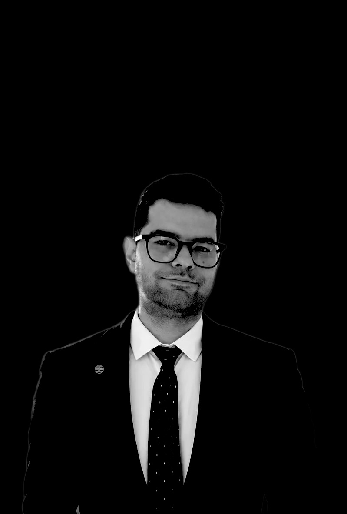

Museology
How museums collect, describe and share objects — with a focus on virtual exhibitions and digital access to heritage. Master in Visual Arts, Museology and Curatorship, University of Bologna.

& Translator
I'm Mahmoud Mohammadi, an art historian and translator based in Paris. I study how museums read, describe and stage objects — with a focus on Persian visual culture, museology and scenography.
Manifesto
For me, a museum is where research meets the public. Read closely. Describe clearly. Stage with care. Persian texts, images and textiles are my field; museology and scenography are how I share them. Five languages help me carry ideas across borders, and every exhibition is a chance to tell a story better.
How museums collect, describe and share objects — with a focus on virtual exhibitions and digital access to heritage. Master in Visual Arts, Museology and Curatorship, University of Bologna.
Arranging rooms, light and sequence so visitors move through a story rather than past a list. Art mediation at 22,48 m² in Romainville and the Grand 8 Festival in Paris.
Iranian art and culture from Sasanian texts and Manichaean iconography to Persian printed textiles and Kalamkari.
Persian, English, French, Italian and Arabic — carrying texts, ideas and audiences across cultures. Bachelor in English Translation, University of Isfahan.
Objects aresilent.stories aren't.
Education
Mobility
Experience
Publications
Talks & honours
Certificates
Languages
Skills & interests
Let's talk museums